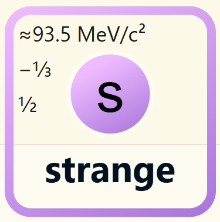

< Back
The strange quark is one of the six types of quarks in the Standard Model of particle physics.

Strange quarks combine with lighter particles like up, down, and charm quarks to form particles like the K Meson.
More info